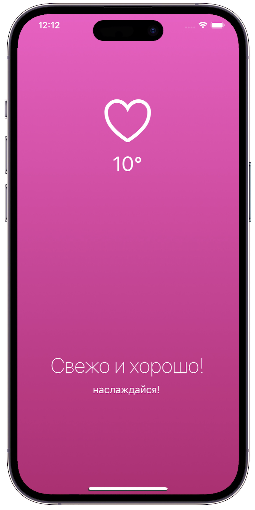
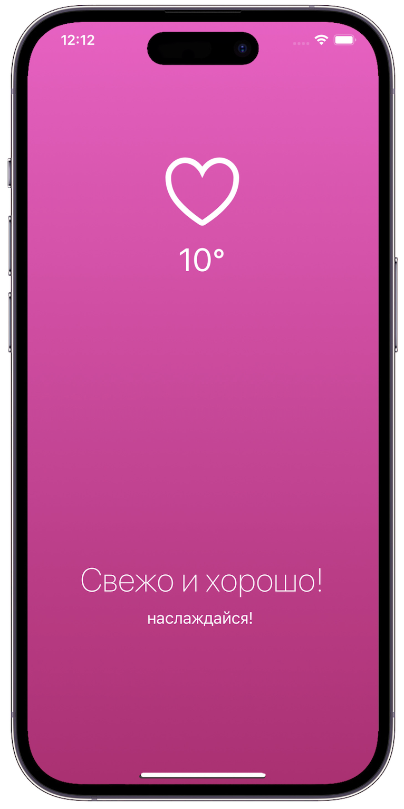

Maxim Tertyshnyi | Frontend Developer
[ React, Fintech, Banking System]
Mobile app for a neobank Relocare
Relocare is a FinTech product that helps relocants open a free bank account, spend and save money abroad regardless of citizenship.
Together with a team, we integrated the app with a fully regulated worldwide financial platform Railsr. With the help of Onfido SDK, we implemented KYC verification, where I disabled all the functions that are not available to the user before passing KYC and developed a redirection function.
As a frontend developer, I developed and styled reusable React components, screens, component logic, created validation for app components, and custom-select components. I also developed the MobX store, worked with React Hook Form and API.
The app was developed with a low code backend with the help of Directual. The app’s first version is to be launched in 2023.

Mobile app for a chain of coffeehouses "Surf Coffee"
Together with a small development team, we created the app from scratch. My role was focused on product research: finding processes to automize, defining app features and business achievements.
With the means of an analysis of the cafe’s work and communication with customers, I revealed several problems and the most relevant ways to eliminate them. I defined features that could not only make customers more loyal and satisfied with the service but also attract new customers, and increase brand awareness and profit.
I developed and presented the app’s first version with basic required features and ideas to implement in the future, and proved a company’s profitability with the help of a plan of a payback period in 4 months.
The project has been accepted and launched.
[ Business Analysis, Research, Development ]
[ REST IN HISTORY ]
 

[ EXPERIENCE ]
I graduated from the Plekhanov Russian University of Economics with Bachelor's degree in Applied Informatics. As my bachelor's thesis, I worked in the mobile app development team. My role was focused on analyzing and searching for solutions to automate the company's processes with the means of the mobile app.
After the university, I entered Yandex Practicum online school and mastered the profession of a web developer. I gained both theoretical knowledge and work experience while studying. I supported myself and got real experience by working as a freelance web developer. After a while I got job as a frontend developer in a FinTech product and developed a mobile app from scratch in a team.
Besides I write music for various projects in such genres as a soundtrack, neoclassic, and develop in the field of sound design. Personally, I pay much attention to details, and like to work in a team, but also have no qualms about tackling challenges alone.
[ SKILLS ]
[ BONUS-SKILLS ]
- basic knowledge of 3D modeling software (Blender)
- experience with relational databases, SQL and EXCEL
- good knowledge of creation of Domain Models and Databases
- experience with product research, searching for bottlenecks and ways to eliminate them
[ EDUCATION ]
Certifications: Web-Developer at Yandex Practicum
2021 - 2022
Bachelor of Applied Informatics at Plekhanov Russian University of Economics
2017 - 2021
Secondary Specialized Education in Information Systems at Technical Fire and Rescue College named after the Hero of the Russian Federation V.M. Maksimchuk
2013 - 2017